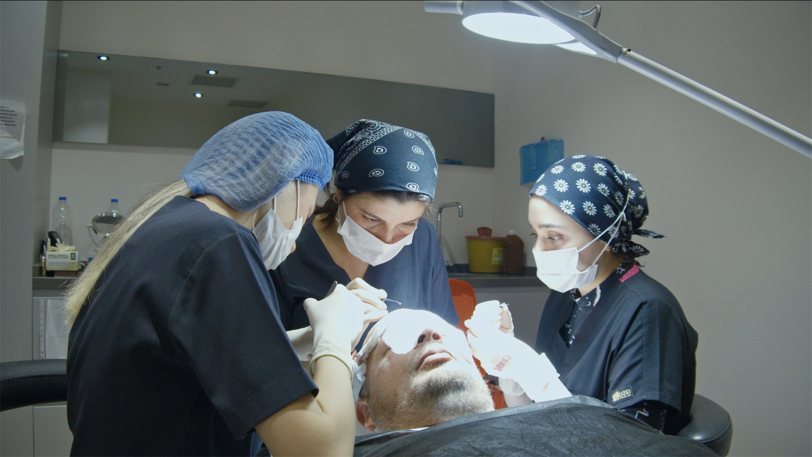
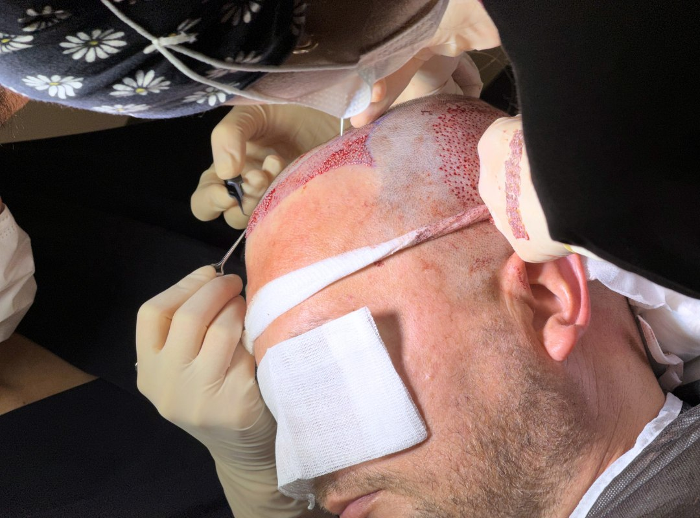
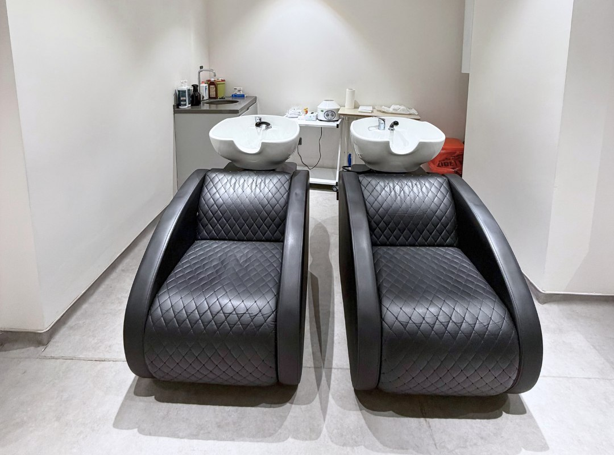

DHI
DHI uses implanter pens for controlled graft placement, often discussed for refined hairline work and denser placement in selected zones.
Hair transplant
Hair transplant planning at Velaxa begins with clinical photos, donor assessment, hairline goals, and a clear discussion of whether DHI, FUE, or Sapphire FUE fits the case.
Front, top, sides, crown, and donor images are used to structure the first review.
The procedure page uses actual treatment, wash, and recovery visuals instead of stock imagery.
Technique overview
DHI uses implanter pens for controlled graft placement, often discussed for refined hairline work and denser placement in selected zones.
FUE relies on individual follicular extraction and implantation, remaining a strong option for a wide range of hair loss patterns.
Sapphire FUE follows the FUE principle while opening channels with sapphire blades when the case benefits from that channel strategy.
Candidate suitability
Frontal recession, mid-scalp thinning, and crown work each call for a different coverage and density strategy.
Hair caliber, donor stability, and the condition of the donor area shape what the case can support.
The hairline design and target density need to stay realistic for the available donor strength.
Previous procedures, active hair loss, medication, and scalp condition all matter before a treatment date is fixed.

Procedure gallery

Clinical workflow during graft placement under controlled lighting and sterile room setup.

Close-up view of placement work in the recipient area during treatment.
Clean room preparation for consultation, treatment, and post-procedure monitoring.
Recovery and aftercare
Patients need clear instruction on cleansing, foam or lotion use, and scalp handling from the first wash onward.
Swelling, redness, shedding, and the early healing timeline should be explained before the patient leaves Istanbul.
Aftercare products stay secondary to the clinical plan, but they help standardize cleansing and recovery habits.

A structured set of cleansing and support products for the early recovery phase.

Product guidance is used to reinforce a cleaner post-treatment routine.


FAQ
Front, top, both sides, crown, and donor area photos are the minimum for a useful first assessment.
The decision depends on the donor area, hairline goals, scalp pattern, and how the case should be distributed across the target zones.
Yes. Washing, redness, swelling, shedding, and the first photo-based follow-up steps are part of the consultation process.
Yes. WhatsApp is the fastest route for sending the first photo set and receiving the next clear step.
Hair consultation
One clear set of photos is enough to start the donor, density, and technique discussion.